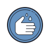
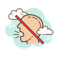

Patuhilah protokol kesehatan !!!
Pentingnya cuci tangan pakai sabun mencegah penyebaran dan penularan Virus Covid-19
Pakailah masker dalam melakukan kegiatan di luar rumah untuk melindungi diri sendiri dan orang lain dari penyebaran Covid-19
Jika terdapat keperluan mendesak diluar rumah, pastikan anda menjaga jarak 1-2 meter dengan orang lain disekitar anda
Jika tidak ada keperluan yang mendesak, lebih baik tetap berada dirumah karena intensitas bertemu orang dapat menjadi sarang penyebaran Covid-19
